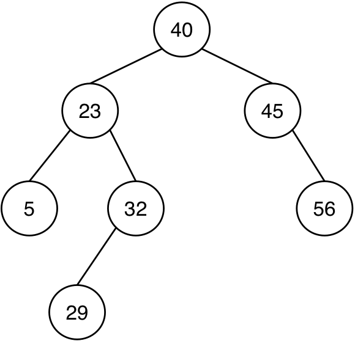
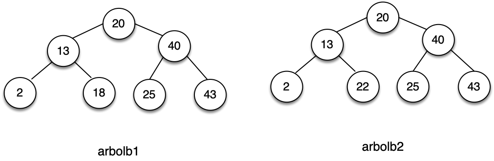

Práctica 8: Árboles¶
Antes de la clase de prácticas¶
-
Los siguientes ejercicios están basados en los conceptos de teoría vistos la semana pasada. Antes de la clase de prácticas debes repasar todos los conceptos y probar en el DrRacket todos los ejemplos de los siguientes apartados del tema 4 Estructuras de datos recursivas
- 2 Árboles
- 3 Árboles binarios
Ejercicios¶
Descarga el fichero
lpp.rkt,
pulsando el botón derecho del ratón y seleccionando la opción Guardar
como lpp.rkt. Guárdalo en la misma carpeta en la que tengas el
fichero practica8.rkt.
El fichero contiene la definición de las funciones de la barrera de
abstracción de árboles y árboles binarios, y las funciones
(pinta-arbol arbol) y (pinta-arbolb arbol-binario) que nos
permiten dibujar gráficamente árboles y árboles binarios.
Ejercicio 1¶
a.1) Escribe la sentencia en Scheme que define el siguiente árbol genérico y escribe utilizando las funciones de la barrera de abstracción de árboles una expresión que devuelva el número 10.

(define arbol '(------------))
(check-equal? ------------------- 10)
a.2) Las funciones que suman los datos de un árbol utilizando recursión mutua y que hemos visto en teoría son las siguientes:
(define (suma-datos-arbol arbol)
(+ (dato-arbol arbol)
(suma-datos-bosque (hijos-arbol arbol))))
(define (suma-datos-bosque bosque)
(if (null? bosque)
0
(+ (suma-datos-arbol (first bosque))
(suma-datos-bosque (rest bosque)))))
Si realizamos la siguiente llamada a la función suma-datos-bosque,
siendo arbol el definido en el apartado anterior:
(suma-datos-bosque (hijos-arbol arbol))
- ¿Qué devuelve la invocación a
(suma-datos-arbol (first bosque))que se realiza dentro de la función? - ¿Qué devuelve la primera llamada recursiva a
suma-datos-bosque?
Escribe la contestación a estas preguntas como comentarios en el fichero de la práctica.
a.3) La función de orden superior que hemos visto en teoría y que realiza también la suma de los datos de un árbol es:
(define (suma-datos-arbol-fos arbol)
(foldr + (dato-arbol arbol)
(map suma-datos-arbol-fos (hijos-arbol arbol))))
Si realizamos la siguiente llamada a la función, siendo arbol el
definido en el apartado anterior:
(suma-datos-arbol-fos arbol)
- ¿Qué devuelve la invocación a
mapdentro de la función? - ¿Qué invocaciones se realizan a la función
+durante la ejecución defoldrsobre la lista devuelta por la invocación amap? Enuméralas en orden, indicando sus parámetros y el valor devuelto en cada una de ellas.
b.1) Escribe la sentencia en Scheme que define el siguiente árbol binario y escribe utilizando las funciones de la barrera de abstracción de árboles binarios una expresión que devuelva el número 29.

(define arbolb '(------------------))
(check-equal? ---------------------- 29)
Ejercicio 2¶
a) Implementa dos versiones de la función (to-string-arbol arbol) que
recibe un árbol de símbolos y devuelve la cadena resultante de
concatenar todos los símbolos en recorrido preorden. Debes implementar
una versión con recursión mutua y otra (llamada to-string-arbol-fos)
con una única función en la que se use funciones de orden superior.
Ejemplo:
(define arbol2 '(a (b (c (d)) (e)) (f)))
(to-string-arbol arbol2) ; ⇒ "abcdef"
b) Implementa dos versiones de la función (veces-arbol dato arbol) que
recibe un árbol y un dato y comprueba el número de veces que aparece
el dato en el árbol. Debes implementar una función con recursión mutua
y otra con funciones de orden superior.
(veces-arbol 'b '(a (b (c) (d)) (b (b) (f)))) ; ⇒ 3
(veces-arbol 'g '(a (b (c) (d)) (b (b) (f)))) ; ⇒ 0
Ejercicio 3¶
a) Implementa dos versiones de la función (hojas-cumplen pred arbol)
que recibe un predicado y un árbol y devuelve una lista con todas
aquellas hojas del árbol que cumplen el predicado. Una función con
recursión mutua y otra con funciones de orden superior.
(define arbol1 '(10 (2) (12 (4) (2)) (10 (5))))
(define arbol2 '(10 (2) (12 (4) (2)) (10 (6))))
(hojas-cumplen even? arbol1) ; ⇒ '(2 4 2)
(hojas-cumplen even? arbol2) ; ⇒ '(2 4 2 6)
b) Implementa dos versiones del predicado (todas-hojas-cumplen? pred
arbol) que comprueba si todas las hojas de un árbol cumplen un
determinado predicado. Una función con recursión mutua y otra con
funciones de orden superior.
No debes usar la función anterior, tienes que hacer un recorrido por
todo el árbol. Para la función de orden superior puedes usar la
función for-all? implementada en el tema 2.
(todas-hojas-cumplen? even? arbol1) ; ⇒ #f
(todas-hojas-cumplen? even? arbol2) ; ⇒ #t
Ejercicio 4¶
a) Implementa, utilizando funciones de orden superior, la función
(suma-raices-hijos arbol) que devuelva la suma de las raíces de los
hijos de un árbol genérico.
Ejemplo:
(define arbol3 '(20 (2) (8 (4) (2)) (9 (5))))
(suma-raices-hijos arbol3) ; ⇒ 19
(suma-raices-hijos (second (hijos-arbol arbol3))) ; ⇒ 6
b) Implementa dos versiones, una con recursión mutua y otra con
funciones de orden superior, de la función (raices-mayores-arbol?
arbol) que recibe un árbol y comprueba que su raíz sea mayor que la
suma de las raíces de los hijos y que todos los hijos (nos referimos a
todos los descendientes) cumplen también esta propiedad.
Ejemplos:
(define arbol4 '(20 (2) (8 (4) (5)) (9 (5))))
(raices-mayores-arbol? arbol3) ; ⇒ #t
(raices-mayores-arbol? arbol4) ; ⇒ #f
c) Define la función (comprueba-raices-arbol arbol) que recibe un
arbol y que devuelve otro arbol en el que los nodos se han sustituido
por 1 o 0 según si son mayores que la suma de las raíces de sus hijos
o no.
Ejemplos:
(define raices_arbol3 (comprueba-raices-arbol arbol3)) ; ⇒ (1 (1) (1 (1) (1)) (1 (1)))
(define raices_arbol4 (comprueba-raices-arbol arbol4)) ; ⇒ (1 (1) (0 (1) (1)) (1 (1)))
Ejercicio 5¶
a) Define la función con recursión mutua (es-camino? lista arbol) que debe comprobar si
la secuencia de elementos de la lista se corresponde con un camino
del árbol que empieza en la raíz y que termina exactamente en una
hoja. Suponemos que lista contiene al menos un elemento
Por ejemplo, la lista (a b a) sí que es camino en el siguiente árbol,
pero la lista (a b) no.

Ejemplos: suponiendo que arbol es el árbol definido por la figura
anterior:
(es-camino? '(a b a) arbol) ; ⇒ #t
(es-camino? '(a b) arbol) ; ⇒ #f
(es-camino? '(a b a b) arbol) ; ⇒ #f
b) Escribe la función (nodos-nivel nivel arbol) que reciba un nivel
y un árbol genérico y devuelva una lista con todos los nodos que se
encuentran en ese nivel.

Ejemplos, suponiendo que arbol es el árbol definido por la figura anterior:
(nodos-nivel 0 arbol) ; ⇒ '(1)
(nodos-nivel 1 arbol) ; ⇒ '(2 6)
(nodos-nivel 2 arbol) ; ⇒ '(3 5 7)
(nodos-nivel 3 arbol) ; ⇒ '(4 2)
Ejercicio 6¶
a) Define la función (ordenado-entre? arbolb min max) que comprueba si
un árbol binario está ordenado y sus datos está entre min y
max.
Un árbol binario está ordenado cuando sus hijos izquierdos y derecho están ordenados y cuando la raíz es mayor o igual que todos los números del hijo izquierdo y menor o igual que todos los números del hijo derecho.
Por ejemplo, en la siguiente figura, el árbol binario de la izquierda
(arbolb1) está ordenado, pero el de la derecha (arbolb2) no lo está.

Ejemplo:
(define arbolb1 '(20 (13 (2 () ())
(18 () ()))
(40 (25 () () )
(43 () ()))))
(define arbolb2 '(20 (13 (2 () ())
(22 () ()))
(40 (25 () () )
(43 () ()))))
(ordenado-entre? arbolb1 0 50) ; ⇒ #t
(ordenado-entre? arbolb2 0 50) ; ⇒ #f
(ordenado-entre? arbolb1 0 30) ; ⇒ #f
b) Utilizando la función anterior, define las funciones
(ordenado-menor? arbolb max) y (ordenado-mayor? arbolb min) que
comprueban si un árbol binario está ordenado y sus datos son menores
o iguales o mayores o iguales que el argumento.
Ejemplos:
(ordenado-menor? arbolb1 50) ; ⇒ #t
(ordenado-menor? arbolb1 40) ; ⇒ #f
(ordenado-menor? arbolb2 50) ; ⇒ #f
(ordenado-mayor? arbolb1 0) ; ⇒ #t
(ordenado-mayor? arbolb1 20) ; ⇒ #f
(ordenado-mayor? arbolb2 0) ; ⇒ #f
c) Utilizando las funciones anteriores, define la función (ordenado?
arbolb) que comprueba si un árbol binario está ordenado.
(ordenado? arbolb1) ; ⇒ #t
(ordenado? arbolb2) ; ⇒ #f
Ejercicio 7¶
a) Dado un árbol binario y un camino definido como una lista de símbolos:
'(< > = > > =) en el que:
<: indica que nos vamos por la rama izquierda>: indica que nos vamos por la rama derecha=: indica que nos quedamos con el dato de ese nodo.
Implementa la función (camino-arbolb arbolb camino) que devuelva una
lista con los datos recogidos por el camino.

(camino-arbolb arbolb '(= < < = > =)) ; ⇒ '(9 3 4)
(camino-arbolb arbolb '(> = < < =)) ; ⇒ '(15 10)
b) Recuerda que un árbol binario está ordenado si el dato de la raíz es mayor que todos los datos del hijo izquierdo y menor o igual que los del hijo derecho, y a su vez ambos hijos también están ordenados.
Implementa de forma recursiva la función (inserta-ordenado n a) que recibe un
número y un árbol binario de números que está ordenado, y devuelve un nuevo
árbol binario ordenado que incluye el número.
Ejemplo:
(define a1 (inserta-ordenado 5 arbolb-vacio))
(define a2 (inserta-ordenado 4 a1))
(define a3 (inserta-ordenado 2 a2))
(define a4 (inserta-ordenado 6 a3)))
Lenguajes y Paradigmas de Programación, curso 2024-25
© Departamento Ciencia de la Computación e Inteligencia Artificial, Universidad de Alicante
Domingo Gallardo, Cristina Pomares, Antonio Botía, Francisco Martínez